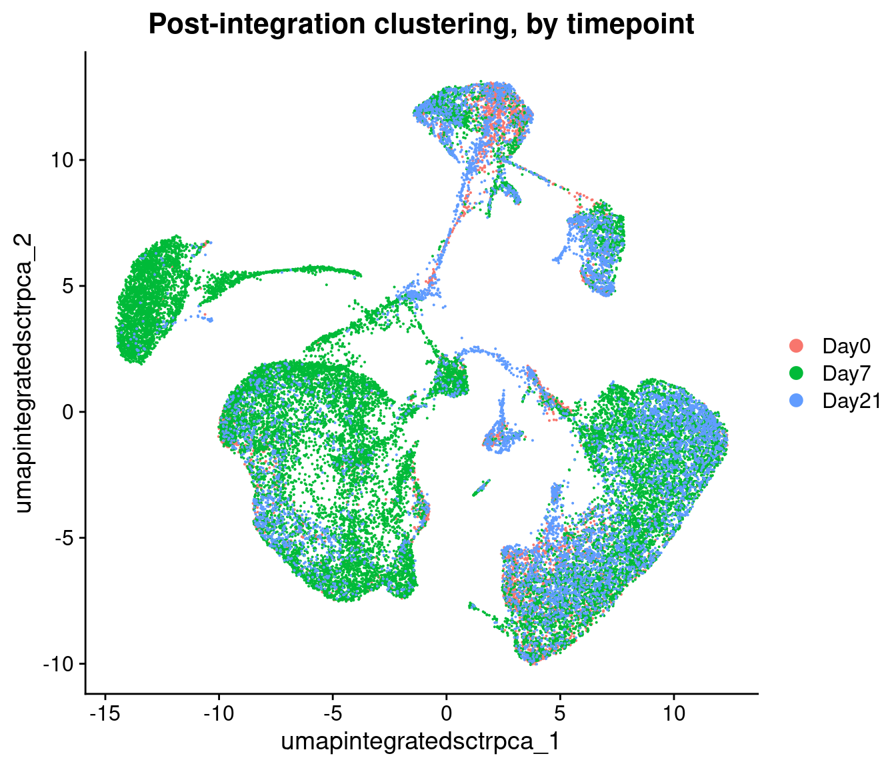

Clustering and Projection
UM Bioinformatics Core Workshop Team
2025-04-09
Workflow Overview

Introduction

|
| Starting with reduced dimensionality data [PCs x cells] for all samples - cells are organized into networks and then split up to into clusters with similar expression programs, regardless of experimental condition. |
Before making any comparisons between experimental conditions, its
important to identify cell-types or sub-types present across all samples
and unsupervised clustering is a reasonable starting point to accomplish
this.
Objectives
- Understand the clustering process and input parameters
- Generate initial clusters using
FindNeighbors()andFindClusters() - Visualize our clustering results with
DimPlot()
Like other steps in our analysis, multiple parameters may need
to be tested and evaluated while we would expect that only the final
would be reported. Clustering is considered part of data exploration so
an iterative approach is common (source).
Clustering and projection
Now that we selected a number of PCs that we think are likely to represent biological variation and integrated our data across samples/batches, our next task is clustering.
An important aspect of parameter selection for clustering is to understand the “resolution” of the underlying biology and your experimental design:
- Is answering your biological question dependent on identifying rarer
cell types or specific subtypes?
- Or are broader cell-types more relevant to address your biological question?
The OSCA book has a helpful analogy comparing clustering to microscopy and points out that “asking for an unqualified ‘best’ clustering is akin to asking for the best magnification on a microscope without any context”.
To generate clusters, we will generate “communities” of cells using the PCs we selected, before choosing a resolution parameter to divide those communities into discrete clusters.
Clustering
Seurat uses a graph-based clustering approach to assign cells to clusters using a distance metric based on the previously generated PCs, with improvements based on work by (Xu and Su 2015) and CyTOF data (Levine et al. 2015) implemented in Seurat v3 and v5 and building on the initial strategies for droplet-based single-cell technology (Macosko et al. 2015) (source). A key aspect of this process is that while the clusters are based on similarity of expression between the cells, the clustering is based on the selected PCs and not the full data set.

To briefly summarize, cells are embedded in a k-nearest neighbors (kNN) graph (illustrated above) based on “the euclidean distance in PCA space” between the cells and the edge weights between any two cells (e.g. their “closeness”) is refined based on Jaccard similarity (source).
Additional context and sources for graph-based clustering
Cambridge Bioinformatics’ Analysis of single cell RNA-seq data course materials, the source of the image above, delves into kNN and other graph based clustering methods in much greater detail, including outlining possible downsides for these methods. To described kNN, we have also drawn from the Ho Lab’s description of this process for Seurat v3 as well as the HBC materials on clustering and the OSCA book’s more general overview of graph based clustering, which also describes the drawbacks for these methods.This process is performed with the FindNeighbors() command,
using the number of principal components we selected in the previous
section.
The second step is to iteratively partition the kNN graph into
“cliques” or clusters using the Louvain modularity optimization
algorithm (for the default parameters), with the “granularity” of the
clusters set by a resolution parameter (source).

We’ll use the FindClusters() function,
selecting a resolution of 0.4 to start, although we could
also add other resolutions at this stage to look at in later steps. See
Waltman
and Jan van Eck (2013) for the underlying algorithms.
Again, how a “cell type” or “subtype” should be defined for your data is important to consider in selecting a resolution - we’d start with a higher resolution for smaller/more rare clusters and a lower resolution for larger/more general clusters.
Then, when we look at the meta data we should see that cluster labels have been added for each cell:
# Cluster PCAs ------------------------------------------------------------
# Create KNN graph with `FindNeighbors()`
geo_so = FindNeighbors(geo_so, dims = 1:pcs, reduction = 'integrated.sct.rpca')
# generate clusters
geo_so = FindClusters(geo_so,
resolution = 0.4,
cluster.name = 'integrated.sct.rpca.clusters')
# look at meta.data to see cluster labels
head(geo_so@meta.data)Modularity Optimizer version 1.3.0 by Ludo Waltman and Nees Jan van Eck
Number of nodes: 31559
Number of edges: 1024599
Running Louvain algorithm...
Maximum modularity in 10 random starts: 0.9441
Number of communities: 18
Elapsed time: 5 seconds| orig.ident | nCount_RNA | nFeature_RNA | condition | time | replicate | day | percent.mt | nCount_SCT | nFeature_SCT | integrated.sct.rpca.clusters | seurat_clusters | |
|---|---|---|---|---|---|---|---|---|---|---|---|---|
| HODay0replicate1_AAACCTGAGAGAACAG-1 | HODay0replicate1 | 10234 | 3226 | HO | Day0 | replicate1 | Day0 | 1.240962 | 6062 | 2867 | 0 | 0 |
| HODay0replicate1_AAACCTGGTCATGCAT-1 | HODay0replicate1 | 3158 | 1499 | HO | Day0 | replicate1 | Day0 | 7.536416 | 4607 | 1509 | 0 | 0 |
| HODay0replicate1_AAACCTGTCAGAGCTT-1 | HODay0replicate1 | 13464 | 4102 | HO | Day0 | replicate1 | Day0 | 3.112002 | 5314 | 2370 | 0 | 0 |
| HODay0replicate1_AAACGGGAGAGACTTA-1 | HODay0replicate1 | 577 | 346 | HO | Day0 | replicate1 | Day0 | 1.559792 | 3877 | 1031 | 11 | 11 |
| HODay0replicate1_AAACGGGAGGCCCGTT-1 | HODay0replicate1 | 1189 | 629 | HO | Day0 | replicate1 | Day0 | 3.700589 | 4166 | 915 | 0 | 0 |
| HODay0replicate1_AAACGGGCAACTGGCC-1 | HODay0replicate1 | 7726 | 2602 | HO | Day0 | replicate1 | Day0 | 2.938131 | 5865 | 2588 | 0 | 0 |
The result of FindNeighbors() adds graph information to
the graphs slot:

The result of FindClusters() adds two columns to the
meta.data table and changes the active.ident
to the “seurat_clusters” column. In other words, the cells now belong to
clusters rather than to their orig.ident.

Generally it’s preferable to err on the side of too many clusters, as they can be combined manually in later steps. In our experience, this is another parameter that often needs to be iteratively revised and reviewed.
Resolution parameters recommendations
More details on choosing a clustering resolution
The Seurat clustering tutorial recommends selecting a resolution between 0.4 - 1.2 for datasets of approximately 3k cells, while the HBC course recommends 0.4-1.4 for 3k-5k cells. However, in our experience reasonable starting resolutions can be very dataset dependent.Cluster plots
To visualize the cell clusters, we can use dimensionality reduction techniques to visualize and explore our large, high-dimensional dataset. Two popular methods that are supported by Seurat are t-distributed stochastic neighbor embedding (t-SNE) and Uniform Manifold Approximation and Projection (UMAP) techniques. These techniques allow us to visualize our high-dimensional single-cell data in 2D space and see if cells grouped together within graph-based clusters co-localize in these representations (source).
While we unfortunately don’t have time to compare and contrast tSNE, and UMAP, we would highly recommend this blog post contrasting tSNE and UMAP for illustrative examples. The Seurat authors additionally caution that while these methods are useful for data exploration, to avoid drawing biological conclusions solely based on these visualizations (source).
To start this process, we’ll use the RunUMAP() function to
calculate the UMAP reduction for our data. Notice how the previous
dimensionality choices carry through the downstream analysis and that
the number of PCs selected in the previous steps are included as an
argument.
# Create UMAP reduction ---------------------------------------------------
geo_so = RunUMAP(geo_so, dims = 1:pcs, reduction = 'integrated.sct.rpca', reduction.name = 'umap.integrated.sct.rpca')
# Note a third reduction has been added: `umap.integrated.sct.rpca`
geo_so An object of class Seurat
46957 features across 31559 samples within 2 assays
Active assay: SCT (20468 features, 3000 variable features)
3 layers present: counts, data, scale.data
1 other assay present: RNA
3 dimensional reductions calculated: unintegrated.sct.pca, integrated.sct.rpca, umap.integrated.sct.rpcaRefering back to the schematic, the resulting Seurat object now has
an additional umap.integrated.sct.rpca in the
reduction slot:

Visualizing and evaluating clustering
After we generate the UMAP reduction, we can then visualize the
results using the DimPlot() function,
labeling our plot by the auto generated seurat_clusters
that correspond to the most recent clustering results generated.
At this stage, we want to determine if the clusters look fairly well separated, if they seem to correspond to how cells are grouped in the UMAP, and if the number of clusters is generally aligned with the resolution of our biological question. Again, if there are “too many” clusters that’s not necessarily a problem.
We can also look at the same UMAP labeled by day to
visually inspect if the UMAP structure corresponds to the
day.
# Visualize UMAP cluster 1 --------------------------------------------------
# cluster ID labels
post_integration_umap_plot_clusters = DimPlot(geo_so, group.by = 'seurat_clusters', label = TRUE, reduction = 'umap.integrated.sct.rpca') + NoLegend()
post_integration_umap_plot_clusters
ggsave(filename = 'results/figures/umap_integrated_sct_clusters.png', plot = post_integration_umap_plot_clusters, width = 6, height = 6, units = 'in')
# Visualize UMAP cluster 2 --------------------------------------------------
# clusters with labels, split by condition
post_integration_umap_plot_split_clusters = DimPlot(geo_so, group.by = 'seurat_clusters', split.by = 'time', label = TRUE, reduction = 'umap.integrated.sct.rpca') + NoLegend()
post_integration_umap_plot_split_clusters
ggsave(filename = 'results/figures/umap_integrated_sct_split_clusters.png', plot = post_integration_umap_plot_clusters, width = 14, height = 6, units = 'in')# Visualize UMAP cluster 3 --------------------------------------------------
# UMAP with day labels (note - we added this column to the meta-data yesterday)
post_integration_umap_plot_day = DimPlot(geo_so, group.by = 'day', label = FALSE, reduction = 'umap.integrated.sct.rpca')
post_integration_umap_plot_day
ggsave(filename = 'results/figures/umap_integrated_sct_day.png', plot = post_integration_umap_plot_day, width = 8, height = 6, units = 'in')
Similar to the PCA plots, the day labeled UMAP can tell
us if technical sources of variation might be driving or stratifying the
clusters, which would suggest that the normalization and integration
steps should be revisted before proceeding.
Another approach is to evaluate the number of cells per cluster using
the table() function, split by day or split by
orig.ident to see if the individual samples are driving any
of the UMAP structure:
clusters_counts_condition <- geo_so@meta.data %>%
select(time, integrated.sct.rpca.clusters) %>%
summarise(counts = n(), .by = c(time, integrated.sct.rpca.clusters)) %>%
pivot_wider(names_from = integrated.sct.rpca.clusters, values_from = counts, names_sort=TRUE) %>%
bind_rows(summarise_all(., ~if(is.numeric(.)) sum(.) else "TOTAL"))
clusters_counts_condition
# cells per cluster per sample
clusters_counts_sample <- geo_so@meta.data %>%
select(orig.ident, integrated.sct.rpca.clusters) %>%
summarise(counts = n(), .by = c(orig.ident, integrated.sct.rpca.clusters)) %>%
pivot_wider(names_from = integrated.sct.rpca.clusters, values_from = counts, names_sort=TRUE) %>%
bind_rows(summarise_all(., ~if(is.numeric(.)) sum(., na.rm = TRUE) else "TOTAL"))
clusters_counts_sample| time | 0 | 1 | 2 | 3 | 4 | 5 | 6 | 7 | 8 | 9 | 10 | 11 | 12 | 13 | 14 | 15 | 16 | 17 |
|---|---|---|---|---|---|---|---|---|---|---|---|---|---|---|---|---|---|---|
| Day0 | 1229 | 69 | 206 | 201 | 40 | 820 | 21 | 223 | 17 | 279 | 316 | 37 | 56 | 30 | 2 | 162 | 137 | 29 |
| Day7 | 2725 | 3079 | 2336 | 2067 | 2278 | 716 | 1506 | 638 | 1396 | 761 | 370 | 577 | 604 | 658 | 629 | 314 | 99 | 101 |
| Day21 | 1682 | 1316 | 312 | 537 | 96 | 854 | 31 | 654 | 17 | 276 | 238 | 279 | 111 | 67 | 33 | 49 | 263 | 16 |
| TOTAL | 5636 | 4464 | 2854 | 2805 | 2414 | 2390 | 1558 | 1515 | 1430 | 1316 | 924 | 893 | 771 | 755 | 664 | 525 | 499 | 146 |
| orig.ident | 0 | 1 | 2 | 3 | 4 | 5 | 6 | 7 | 8 | 9 | 10 | 11 | 12 | 13 | 14 | 15 | 16 | 17 |
|---|---|---|---|---|---|---|---|---|---|---|---|---|---|---|---|---|---|---|
| HODay0replicate1 | 358 | 15 | 68 | 63 | 20 | 229 | 7 | 52 | 7 | 72 | 43 | 10 | 17 | 11 | 1 | 48 | 22 | 10 |
| HODay0replicate2 | 158 | 10 | 34 | 36 | 5 | 146 | 8 | 35 | NA | 55 | 81 | 5 | 8 | 7 | 1 | 13 | 24 | 3 |
| HODay0replicate3 | 438 | 28 | 64 | 58 | 4 | 246 | 2 | 78 | 4 | 76 | 89 | 11 | 16 | 5 | NA | 59 | 41 | 3 |
| HODay0replicate4 | 275 | 16 | 40 | 44 | 11 | 199 | 4 | 58 | 6 | 76 | 103 | 11 | 15 | 7 | NA | 42 | 50 | 13 |
| HODay7replicate1 | 688 | 468 | 572 | 555 | 755 | 250 | 566 | 134 | 538 | 71 | 83 | NA | 174 | 212 | NA | 68 | 41 | 38 |
| HODay7replicate2 | 607 | 1071 | 616 | 634 | 460 | 161 | 337 | 177 | 270 | 412 | 106 | NA | 183 | 164 | NA | 93 | 18 | 15 |
| HODay7replicate3 | 998 | 861 | 700 | 561 | 486 | 199 | 396 | 223 | 386 | 160 | 141 | NA | 174 | 165 | NA | 104 | 28 | 44 |
| HODay7replicate4 | 432 | 679 | 448 | 317 | 577 | 106 | 207 | 104 | 202 | 118 | 40 | 577 | 73 | 117 | 629 | 49 | 12 | 4 |
| HODay21replicate1 | 552 | 331 | 83 | 163 | 38 | 238 | 10 | 190 | 6 | 98 | 91 | 56 | 35 | 14 | 12 | 16 | 69 | 2 |
| HODay21replicate2 | 285 | 174 | 66 | 94 | 13 | 196 | 6 | 96 | 2 | 45 | 53 | 55 | 19 | 14 | 4 | 6 | 53 | 5 |
| HODay21replicate3 | 255 | 199 | 61 | 106 | 13 | 182 | 4 | 118 | 1 | 36 | 52 | 43 | 17 | 18 | 3 | 10 | 54 | 6 |
| HODay21replicate4 | 590 | 612 | 102 | 174 | 32 | 238 | 11 | 250 | 8 | 97 | 42 | 125 | 40 | 21 | 14 | 17 | 87 | 3 |
| TOTAL | 5636 | 4464 | 2854 | 2805 | 2414 | 2390 | 1558 | 1515 | 1430 | 1316 | 924 | 893 | 771 | 755 | 664 | 525 | 499 | 146 |
Comparing to unintegrated data
If we had proceeded with our filtered data and only normalized our data without doing any integration, including through the dimensionality reduction and clustering steps and then labeled the cells with their sample of origin, then we would see the following for our data:
Modularity Optimizer version 1.3.0 by Ludo Waltman and Nees Jan van Eck
Number of nodes: 31559
Number of edges: 977875
Running Louvain algorithm...
Maximum modularity in 10 random starts: 0.9522
Number of communities: 22
Elapsed time: 5 seconds
In the plot at left, we see that while there are distinct clusters, those clusters seem to stratified by day. This suggests that without integration, these batch effects could skew the biological variability in our data. While on the right, we see little stratification within our clusters which means the integration seems to have removed those batch effects.
Rewind: Pre-integration evaluation clustering and visualization (code)
Prior to integration, we could follow the same steps we’ve just run for the integrated to see if the resulting clusters tend to be determined by sample or condition (in this case, the day):
geo_so = FindNeighbors(geo_so, dims = 1:pcs, assay = 'RNA', reduction = 'unintegrated.sct.pca', graph.name = c('RNA_nn', 'RNA_snn'))
geo_so = FindClusters(geo_so, resolution = 0.4, graph.name = 'RNA_snn', cluster.name = 'unintegrated.sct.clusters')
geo_so = RunUMAP(geo_so, dims = 1:pcs, reduction = 'unintegrated.sct.pca', reduction.name = 'umap.unintegrated.sct.pca')The plots above were generated with:
# Code block - show unintegrated
pre_integration_umap_plot_orig.ident = DimPlot(geo_so, group.by = 'orig.ident', label = FALSE, reduction = 'umap.unintegrated.sct.pca')
ggsave(filename = 'results/figures/umap_unintegrated_sct_orig.ident.png', plot = pre_integration_umap_plot_orig.ident, width = 8, height = 6, units = 'in')
pre_integration_umap_plot_day = DimPlot(geo_so, group.by = 'time', label = FALSE, reduction = 'umap.unintegrated.sct.pca')
ggsave(filename = 'results/figures/umap_unintegrated_sct_day.png', plot = pre_integration_umap_plot_day, width = 8, height = 6, units = 'in')# Remove the plot variables from the environment to avoid excessive memory usage
rm(pre_integration_umap_plot_orig.ident)
rm(pre_integration_umap_plot_day)
gc()
Alternative clustering resolutions
While we show a single resolution, we can generate and plot multiple resolutions iteratively and compare between them before selecting a clustering result for the next steps:
resolutions = c(0.4, 0.8)
for(res in resolutions) {
message(res)
cluster_column = sprintf('SCT_snn_res.%s', res)
umap_file = sprintf('results/figures/umap_integrated_sct_%s.png', res)
geo_so = FindClusters(geo_so, resolution = res)
DimPlot(geo_so, group.by = cluster_column, label = TRUE, reduction = 'umap.integrated.sct.rpca') + NoLegend()
ggsave(filename = umap_file, width = 8, height = 7, units = 'in')
}In the results, we’ll see multiple resolutions should now be added to the metadata slot.
head(geo_so@meta.data)
Remove plot variables once they are saved
ggplots are terrific for visualizing data and we use them liberally in our analysis and the workshop. Interestingly, ggplots save a reference to the source dataset - in our case a rather large Seurat object. That’s ok in most cases, BUT if you save your RStudio environment (or RStudio temporarily suspends your session), RStudio will save a separate copy of the Seurat object for each ggplot object; RStudio’s simplistic approach avoids a lot of complexity, but can drastically increase your load time and memory usage.
Since (a) we have the script to recreate the plots and (b) we explicitly saved them as graphic objects - we can simply remove them from memory.
# Remove plot variables from the environment to avoid excessive memory usage
plots = c("pre_integration_umap_plot_day",
"post_integration_umap_plot_clusters",
"post_integration_umap_plot_split_clusters",
"post_integration_umap_plot_day")
# Only remove plots that actually exist in the environment
rm(list=Filter(exists, plots))
gc() used (Mb) gc trigger (Mb) max used (Mb)
Ncells 7200805 384.6 12035948 642.8 12035948 642.8
Vcells 745939034 5691.1 1331493210 10158.5 1330520953 10151.1Save our progress
Before moving on to our next section, we will output our updated Seurat object to file:
# Save Seurat object ------------------------------------------------------
saveRDS(geo_so, file = 'results/rdata/geo_so_sct_clustered.rds')
Summary
|
|
| Starting with reduced dimensionality data [PCs x cells] for all samples - cells are organized into networks and then split up to into clusters with similar expression programs, regardless of experimental condition. |
In this section we:
- Generated cluster assignments for our cells using
FindNeighbors()andFindClusters() - Evaluated our initial clusters using
RunUMAPdimensional reduction and visualization
Next steps: Marker genes
These materials have been adapted and extended from materials listed above. These are open access materials distributed under the terms of the Creative Commons Attribution license (CC BY 4.0), which permits unrestricted use, distribution, and reproduction in any medium, provided the original author and source are credited.
| Previous lesson | Top of this lesson | Next lesson |
|---|